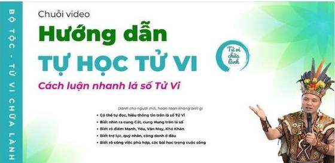

Nhóm có ghi tên khóa như S19, S20, S21… Admin sẽ đưa bạn vào, bạn không cần tự tìm.
Nhóm để trao đổi thông tin trong khóa học. Sau khóa học nhóm sẽ được xóa, học xong bạn có thể chủ động thoát nhóm.
Trước khi lớp học diễn ra, bạn đừng tắt thông báo nhóm này nhé.
3. Nhóm Facebook tài liệu video
Nhóm lưu trữ các video của khóa học, bạn tra cứu bất kỳ lúc nào, lưu trữ lâu dài. Bạn cần vào nhóm này để xem video.
Cách xin vào nhóm:
1
Bấm nút Vào nhóm Facebook ở cuối khung này.
2
Kiểm tra đúng nhóm, rồi bấm nút xanh Tham gia nhóm.
Nhóm của Quán Trung
Hướng dẫn luận nhanh lá số Tử Vi (Chữa Lành)
🔒 Nhóm Riêng tư · 621 thành viên
Đúng tên nhóm này
Tham gia nhómBấm vào đâyChia sẻ
3
Facebook hiện bảng Trả lời câu hỏi có 2 câu. Câu 1: bấm vào ô “Viết câu trả lời…”, ghi tên Zalo và số điện thoại Zalo của bạn, kèm tên admin Bộ tộc đã mời bạn.
Trả lời câu hỏi✕
Yêu cầu tham gia của bạn đang chờ phê duyệt Hãy trả lời những câu hỏi sau của quản trị viên nhóm để họ có thể xem xét yêu cầu tham gia của bạn.
Chào mừng bạn đã đến với group khoá học. Mời bạn chia sẻ: Tên (SĐT) zalo của bạn & tên admin Bộ tộc TVCL đã mời bạn tham gia nhóm nhé
Viết câu trả lời…
Ghi câu trả lời vào ô này
4
Câu 2: kéo xuống, bấm tích vào các ô đồng ý. Sau đó bấm nút Gửi.
Mong bạn sử dụng thật tốt để HIỂU VỀ CHÍNH MINH và có thêm công cụ giúp đỡ người khác. Tuy nhiên, bạn vui lòng bảo mật các video này nhé, bạn đồng ý chứ?
Bạn có thể chọn nhiều đáp án
✓Có, tôi đồng ý bảo mật các video trong khoá học.
✓Nếu muốn chia sẻ video nào, tôi sẽ xin phép admin fanpage Bộ tộc TVCL
Bấm tích vào ô
HủyGửiBấm Gửi
5
Chờ admin duyệt là bạn vào được nhóm.
Nếu bấm ✕ thoát ra mà chưa trả lời, admin sẽ không biết bạn là học viên để duyệt. Hãy trả lời đủ 2 câu rồi mới bấm Gửi.
Video nằm trong nhóm Facebook ở trên. Sau khi được duyệt vào nhóm, bạn làm theo 4 bước, nhìn số trong hình để biết chỗ bấm:
1
Mở nhóm, bấm mục Đáng chú ý trên hàng mục ngay dưới tên nhóm.
2
Tìm bài “Hướng dẫn học tự học Tử Vi qua video dành cho người chưa biết về Tử Vi”.
3
Bài viết đang thu gọn. Bấm chữ Xem thêm để mở hết danh sách video.
f
Hướng dẫn luận nhanh lá số Tử Vi (Chữa Lành)
🔒 Nhóm Riêng tư
Thảo luậnĐáng chú ý1Thành viênSự kiệnFile phương tiện
TV
Bộ tộc Tử Vi Chữa Lành
Quản trị viên
HƯỚNG DẪN HỌC TỰ HỌC TỬ VI QUA VIDEO DÀNH CHO NGƯỜI CHƯA BIẾT VỀ TỬ VI.
2
Cảm ơn bạn đã tham gia khóa học. Dưới đây là một số hướng dẫn về khóa học & danh sách video. Chúc bạn sẽ học thật vui, khám phá được nhiều điều thú vị trên lá số của mình.
PHẦN 1: HƯỚNG DẪN LUẬN
VIDEO 1: Hướng dẫn cách học qua videofacebook.com/…/posts/…
VIDEO 2: Giới thiệu về tử vi và những ứng dụng của tử vifacebook.com/groups/luannhanhlas…Xem thêm3

Đây là trang nhóm khi bạn bấm mục Đáng chú ý.
4
Sau khi bấm Xem thêm, danh sách video hiện ra. Bấm vào dòng link màu xanh dưới mỗi video để xem, học lần lượt từ video 1.
TV
Bộ tộc Tử Vi Chữa Lành
Quản trị viên
HƯỚNG DẪN HỌC TỰ HỌC TỬ VI QUA VIDEO DÀNH CHO NGƯỜI CHƯA BIẾT VỀ TỬ VI.
Cảm ơn bạn đã tham gia khóa học…
PHẦN 1: HƯỚNG DẪN LUẬN
VIDEO 1: Hướng dẫn cách học qua videofacebook.com/…/posts/…
VIDEO 2: Giới thiệu về tử vi và những ứng dụng của tử vifacebook.com/…/posts/…
VIDEO 3: Nội dung chính chúng ta học trong khóa cơ bản này là gì?facebook.com/…/posts/…
VIDEO 4: Hướng dẫn lập lá số tử vi đúng chuẩn lớp học, lá số khác rất khó họcfacebook.com/…/posts/…
VIDEO 5: Nguyên tắc luận tử vi (tam phương tứ chính), cần biết trước khi đi vào luậnfacebook.com/…/posts/…
VIDEO 6: Cách xem nhanh tốt xấu của 1 cung (cách xác định cát hung)facebook.com/…/posts/…
VIDEO 7: Tìm ra 3 cung tốt nhất trên lá số của bạn, 3 cung hung nhất (tìm ra hướng đi thuận lợi cho bản thân)facebook.com/…/posts/…
VIDEO 8: 5 bước luận 1 lá số tử vifacebook.com/…/posts/…
VIDEO 9: Các phương pháp cải mệnh, với cung mệnh, cung thânfacebook.com/…/posts/…